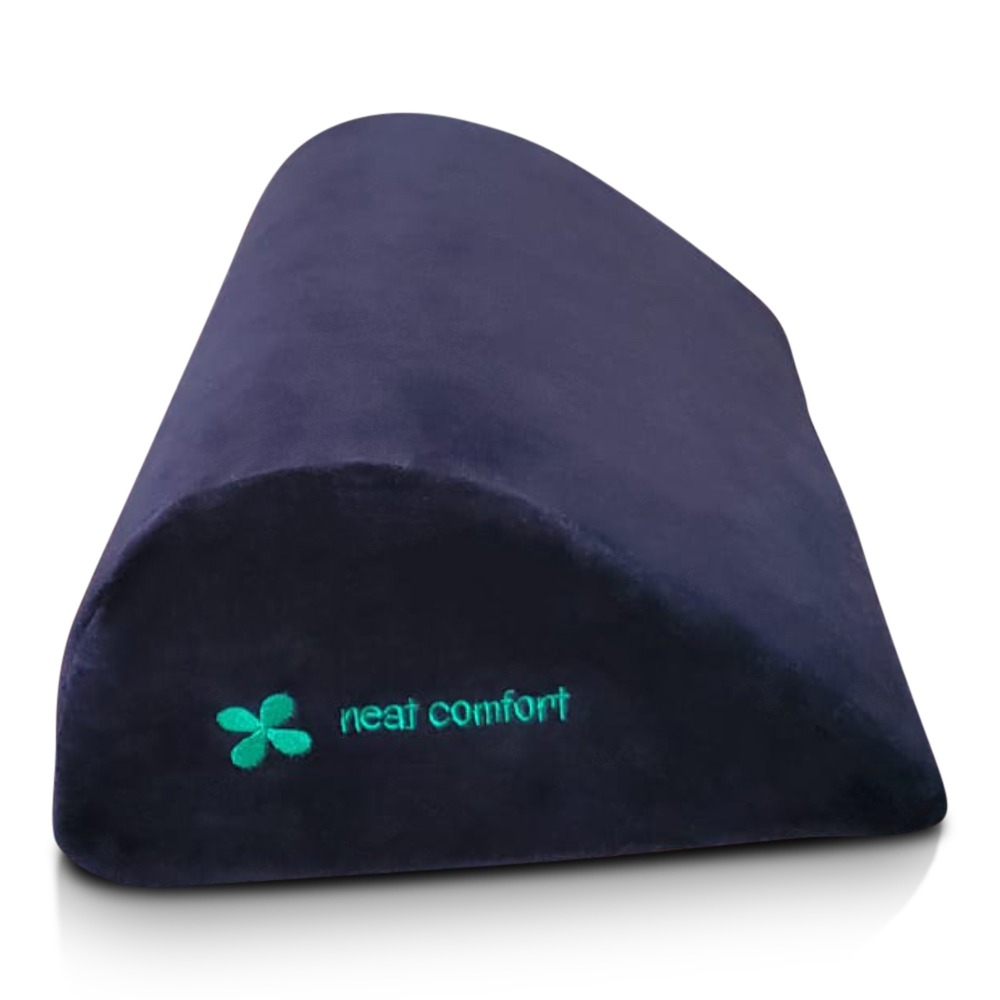
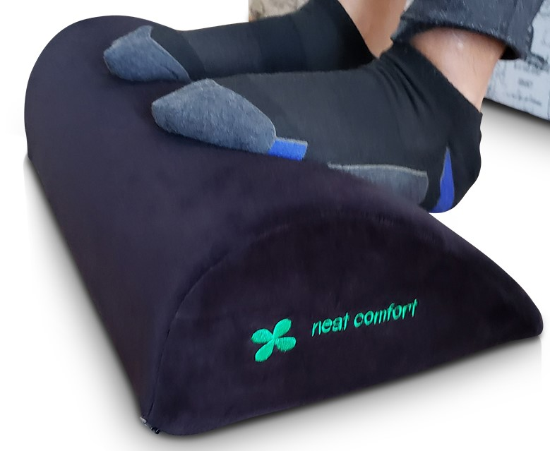
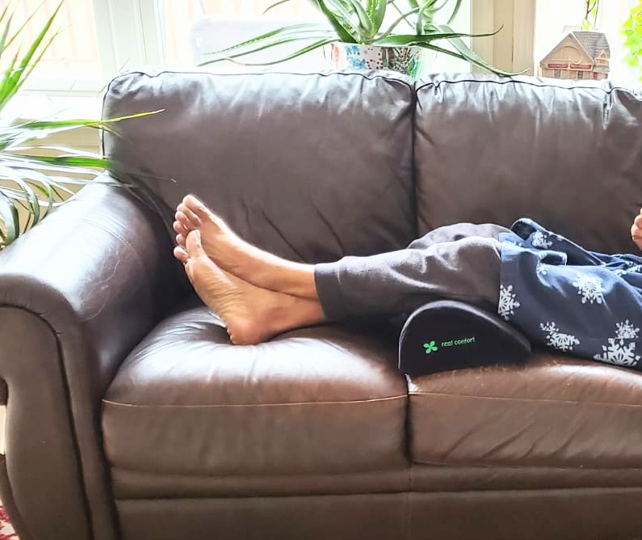

Welcome To
Neat Comfort
Under Desk Foot Rest Pillow – Teardrop Shape Memory Foam Leg Pillow - Foot Stand under Desk - Office or Work from Home Accessories - Footrest for Couch - Foot Pain Relief - Chair Support - Leg Rest
Memory Foam and Teardrop shape - Our under Desk Foot Rest Pillow is made of eco-friendly premium quality memory foam with a Teardrop shape design to allow you to rest your foot comfortably for an extended period. We designed our pillow to reduce pressure on your legs, provide support to your lower back and spine, maintain good posture, and improve blood circulation. Most comfortable footrest you will ever use.
Standardized for Everyone - This Teardrop shape footstool is perfect for everyone. Whether you work from home or office, working comfortably for long hours prevents swelling legs. This pillow is suitable for short people who cannot touch the floor. Children need it to rest their feet for productive study. Pregnant women can use it from edema feels tiredness. Side sleepers can use the pillow to have a restful sleep.
Versatile & Multipurpose – You can use the Footrest pillow upright to elevate your legs to reduce fatigue Or turn it over to use it as a rocker to promote blood circulation. It is a good travel companion and a perfect gift for all gender, ages, and demography.
Perfect choice of Medical Professionals - Our product is recommended by professionals who understand the importance of lumbar, leg, and foot health. Rest assured, our footrest pillow will deliver the ultimate experience and well-being of your health.
Top Quality Memory Foam - Our Premium Grade Eco-Friendly Teardrop Shape Memory Foam is High Density and Compressed; most comfortable under desk Foot Rest Pillow you will ever experience; Non-slip bottom; Black velvet cover.
Reduce Discomfort – Our Foot Rest Pillow provides firm support to your feet, legs, knees, and lower back to improve your posture to ensure comfortable sitting for a long period of time; Our pillow boost the body blood flow to prevent blood clots, swelling and pain.
Multifunctional - People who work on their feet all day may notice the pain traveling up the legs and back can cause them to toss and turn and prevent them from fully relaxing. Our Memory Foam Pillow can be used as a leg pillow to help ease the pain; Pillow is a perfect companion for Air travel and stomach sleepers.
Easy to Clean – Memory Foam Foot Rest Pillow comes with a Removable Washable and Breathable Velvet Black Cover; slowly remove the cover from the pillow; Wash the cover in a gentle cycle in the washing machine and dry on the low setting of the Dryer; DO NOT WASH MEMORY FOAM PILLOW.
We’ve Got You Covered - Your Memory Foam Foot Rest Pillow comes with a 100% Money Back Guarantee; If you are unhappy with your pillow, please contact us; We are willing to give you a full refund or a replacement.
|  | |
|---|---|
|  | |
|
 |
Please visit us often for the latest items.
Neat Comfort ||| 418 W Main St, Lansdale, PA 19446 ||| Email: neatcomfort@gmail.com
Please like us on